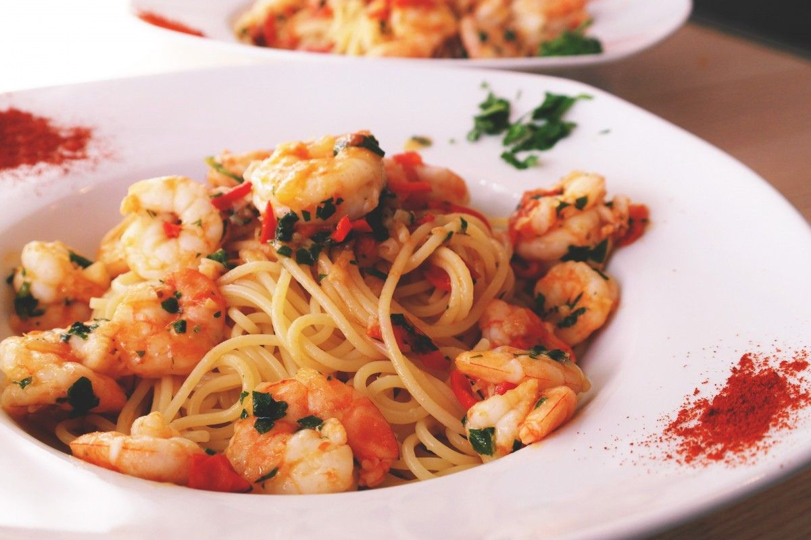

Fra Diavolo Sauce with Linguine

Description
Linguine fra diavolo featuring shrimp, scallops, and mussels cooked in a spicy red sauce made with tomatoes, fresh herbs, and a healthy amount of red pepper flakes.
Ingredients
- 6 cloves garlic, crushed
- 4 tablespoons olive oil, divided
- 6 cups canned whole tomatoes with juice, chopped
- 2 teaspoons red pepper flakes
- 2 teaspoons chopped fresh oregano
- 2 teaspoons chopped fresh basil
- 1 ½ teaspoons salt
- 1 (16 ounce) package linguine
- ½ pound small shrimp, peeled and deveined
- ½ pound bay scallops
- ½ pound mussels, cleaned and debearded
- 1 tablespoon chopped fresh parsley
Steps
- Heat crushed garlic and 2 tablespoons oil in a large saucepan over medium heat until garlic starts to sizzle,
1 to 2 minutes. Stir in tomatoes with juice, red pepper flakes, oregano, basil, and salt.
Bring to a boil, then reduce the heat to low and simmer for 30 minutes, stirring occasionally.
- Meanwhile, bring a large pot of lightly salted water to a boil. Cook linguine at a boil until tender yet firm to the bite,
about 11 minutes; drain and keep warm.
- While the linguine is cooking, heat remaining 2 tablespoons olive oil in a large skillet over high heat.
Stir in shrimp and scallops and cook, stirring frequently, until shrimp turn pink, about 2 minutes. Remove from the heat.
- Stir shrimp, scallops, mussels, and parsley into tomato mixture; cook until sauce begins to bubble and mussels open,
about 7 minutes. Pour sauce over linguine and serve.